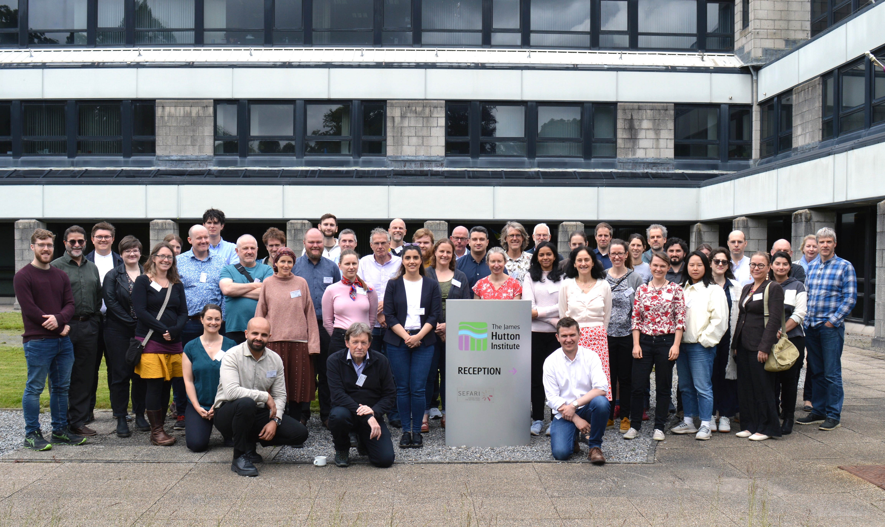

5th International Workshop on High Temporal Resolution Water Quality Monitoring and Analysis
17th to 19th June 2024
The James Hutton Institute, Aberdeen, Scotland, UK
The 2024 edition of the International Workshop on High Temporal Resolution Water Quality Monitoring and Analysis was hosted by
the James Hutton Institute in Aberdeen, Scotland, UK.
The workshop consisted of 2 days with presentations and discussion sessions, and a 1-day field excursion.
Themes of the workshop were:
- New advances in high-resolution water quality monitoring - biological monitoring, nutrients, sediment and emerging contaminants; Innovative and low cost solutions
- Best practice in high-temporal-resolution experimental design, and data handling, assimilation and quality control
- New approaches to data integration across different spatial and temporal resolution, remote sensing, modelling and AI for improved process understanding
- New process understanding for management and decision support

Field Excursion
The field excursion visited the site of the Easter Beltie Restoration Project, which returned a
straightened agricultural stream to a natural meandering course to improve habitats and climate resilience,
and Glensaugh, an upland livestock farm with a significant amount and variety of scientific
observation spanning several decades.

Book of Abstracts
Here you can browse the book of abstracts from the workshop:
Scientific Committee
The scientifc committee for the workshop were:
- Dr. Miriam Glendell (James Hutton Institute, Scotland, UK)
- Camilla Negri (James Hutton Institute, Scotland, UK)
- Dr. Kerr Adams (James Hutton Institute, Scotland, UK)
- Dr. Rachel Helliwell (James Hutton Institute, Scotland, UK)
- Prof. Marc Stutter (James Hutton Institute, Scotland, UK)
- Dr. Magdalena Bieroza
- Prof. Peter Hunter (University of Stirling, Scotland, UK)

ALL PHOTOS ON THIS PAGE ARE © PAUL GLENDELL PHOTOGRAPHY (http://www.glendell.co.uk/).